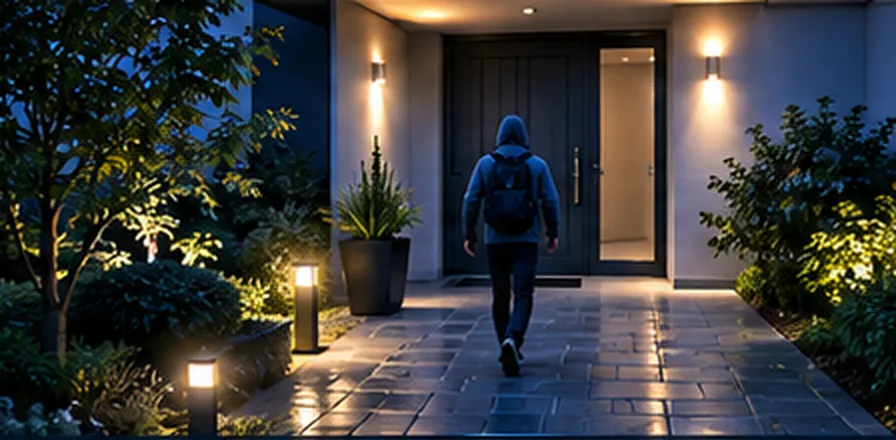

Podgląd na żywoObraz z kamery przy komputerze Windows.
HOME SECURITY · MONITORING DLA TWOJEGO DOMU
Twój dom.
Pod kontrolą,
gdziekolwiek jesteś.
Podgląd na żywo z kamery przy komputerze, archiwum nagrań i wygodny dostęp z telefonu. HOME SECURITY pomaga Ci sprawdzić, co dzieje się w domu, bez przełączania się między wieloma narzędziami.
Pierwszy raz? Załóż konto lub zobacz instrukcję uruchomienia.
Komputer Windows x64Telefon przez przeglądarkęFolder nagrań na komputerze
Wydanie rozwojowe: to nie jest gotowy system alarmowy. Sprawdź możliwości i ograniczenia. Masz pytanie o ofertę?

Jasny obraz sytuacji.Windows w domu. Podgląd w telefonie.
Kontrola z telefonuPanel w przeglądarce Androida i iPhone’a.
Lokalne archiwumNagrania w wybranym folderze komputera.
Prywatność i dostępKonto i dodatkowy PIN to osobne kroki.
HOME SECURITY / TWÓJ DOM POD KONTROLĄ
Sprawdź, co dzieje się w Twoim domu.
Obraz z kamery przy komputerze, wygodny podgląd na telefonie i nagrania w wybranym folderze. Wszystko w jednym panelu, bez obietnic funkcji, których jeszcze nie ma.
Monitoring pod kontroląProjekt wizualny HOME SECURITY
Zobacz możliwości w praktyce.
Trzy najważniejsze części HOME SECURITY. Zdjęcia są ilustracyjne, nie przedstawiają aktywnej transmisji.
 01 / PODGLĄDKamera na żywoObraz z komputera nadającego możesz otworzyć w panelu na swoim telefonie.Sprawdź podgląd →
01 / PODGLĄDKamera na żywoObraz z komputera nadającego możesz otworzyć w panelu na swoim telefonie.Sprawdź podgląd →

02 / NAGRANIAWracaj do zapisanych chwilWybierz dzień i sprawdź materiały zapisane w folderze komputera.Poznaj archiwum → 03 / ZDALNY DOSTĘPTwój panel w telefoniePołącz się przez przeglądarkę. Dostęp do panelu jest oddzielony od publicznej strony.Jak uruchomić →
03 / ZDALNY DOSTĘPTwój panel w telefoniePołącz się przez przeglądarkę. Dostęp do panelu jest oddzielony od publicznej strony.Jak uruchomić →
JEDEN PANEL · CODZIENNY SPOKÓJ
Wszystko, co ważne.
W jednym miejscu.
Nie musisz przekopywać się przez ustawienia. Najważniejsze elementy monitoringu mają być czytelne od pierwszego spojrzenia.
01 / PODGLĄDWINDOWS + TELEFON
HOME SECURITYWIDOK POGLĄDOWY
Twoja kamera, jeden widokPodgląd pojawia się po połączeniu urządzeń.
Stan połączeniaNagraniaUstawienia
Podgląd bez zbędnych ekranów
Sprawdzaj obraz i stan połączenia z panelu właściciela. Widok na telefonie nie przejmuje kamery komputera.
Zobacz prezentację panelu →Nagrania we właściwym miejscu
Wracaj do zapisanych materiałów w archiwum. Pliki lokalne znajdują się w wybranym folderze komputera.
Poznaj funkcje →Panel chroniony dostępem
Oddzielna strefa właściciela, logowanie i dodatkowy PIN. Publiczna strona nie wyświetla prywatnego obrazu z kamery.
Jak działa dostęp →CO OBEJMUJE SYSTEM
Monitoring dopasowany
do Twojego domu
Podgląd, nagrania, zdarzenia i panel na telefonie działają razem. Zdjęcia na kartach to ilustracje projektu, nie obraz z Twojej kamery.
Poznaj wszystkie możliwościPANEL HOME SECURITY
Twój dom
w zasięgu ręki
Panel otworzysz w przeglądarce telefonu i dodasz do ekranu głównego. Komputer z kamerą pozostaje w domu i udostępnia obraz.
- Podgląd obrazu z komputera nadającego
- Archiwum nagrań i zdarzenia
- Logowanie do konta i dodatkowy PIN
- Działa na Androidzie i iPhonie (panel przeglądarkowy)
Aplikacje w Google Play i App Store nie są jeszcze opublikowane.
Ilustracja na telefonie pokazuje układ panelu. Obraz pojawia się dopiero po połączeniu z Twoim komputerem.
Windows x64Program na komputerze z kamerą
Android i iPhonePanel w przeglądarce (PWA)
2 kroki dostępuKonto, a potem PIN
Zapis lokalnyFolder wybierasz sam
Sprawdź na swoim komputerzePobierz HOME SECURITY
PIERWSZE URUCHOMIENIE
Od instalacji do podglądu.
Trzy proste kroki.
Najpierw konfiguracja komputera z kamerą. Potem połączenie z panelem na telefonie. Bez udawania, że monitoring jest gotowy przed ustawieniem urządzeń.
Sprawdź wymagania- 01
Zainstaluj HOME SECURITY
Pobierz aktualną wersję Windows i przygotuj kamerę oraz mikrofon.
- 02
Wybierz urządzenie i zapis
Ustaw źródło obrazu oraz folder, do którego mają trafiać nagrania.
- 03
Otwórz panel właściciela
Zaloguj się, podaj PIN i sprawdź połączenie na telefonie.
GOTOWY, ABY SPRAWDZIĆ?
Zacznij od swojego komputera.
Zapoznaj się z wymaganiami, zainstaluj program i sprawdź możliwości obecnego wydania.
HOME SECURITY jest projektem rozwojowym i nie zastępuje certyfikowanego systemu alarmowego.Jak zacząć?
Sprawdź, jak połączyć komputer z kamerą i telefon.
Jak działa →Co potrafi system?
Poznaj możliwości oraz ograniczenia obecnego wydania.
Zobacz możliwości →Potrzebujesz pomocy?
Przejdź do instrukcji, odpowiedzi i kontaktu.
Otwórz pomoc →